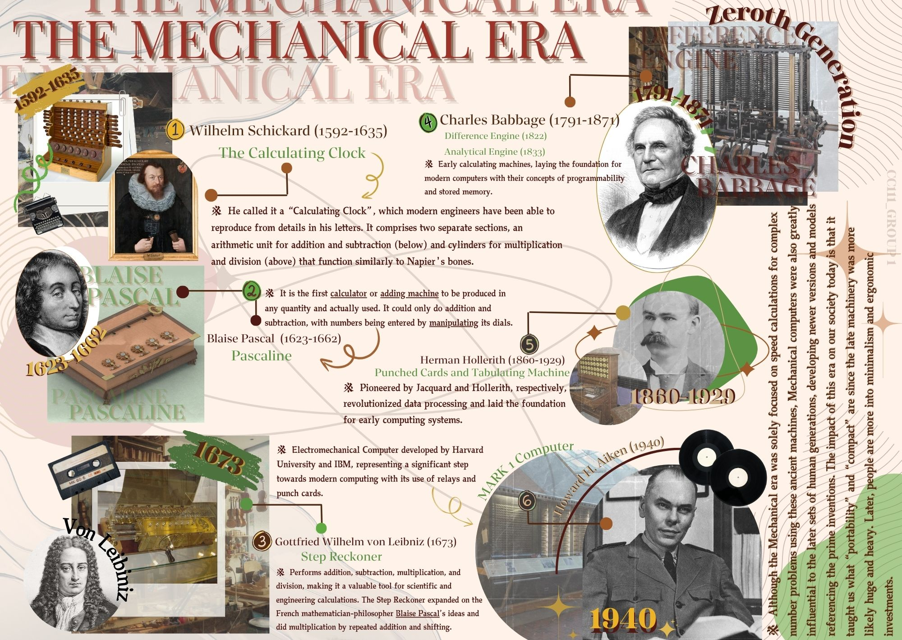
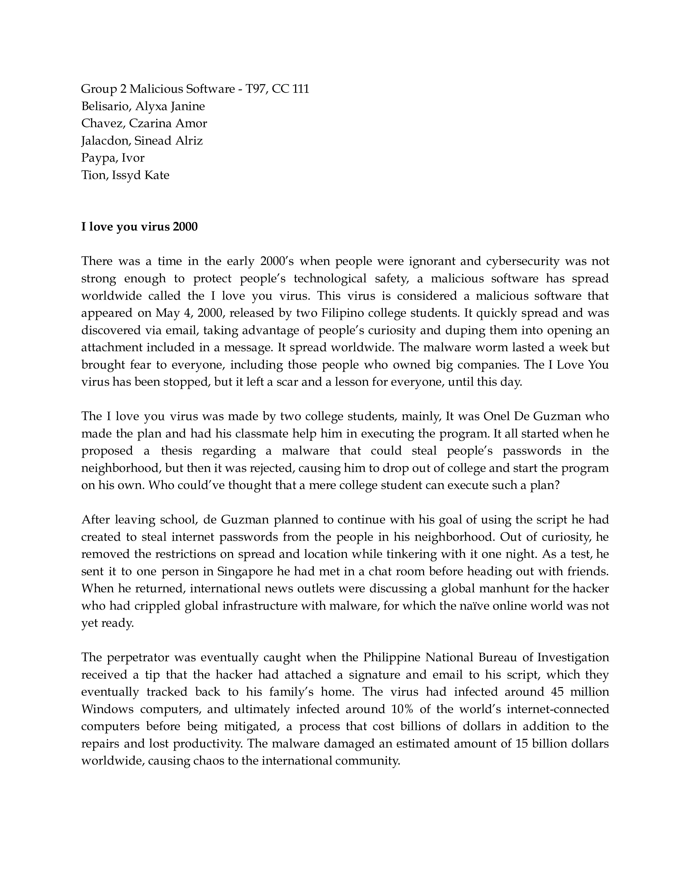
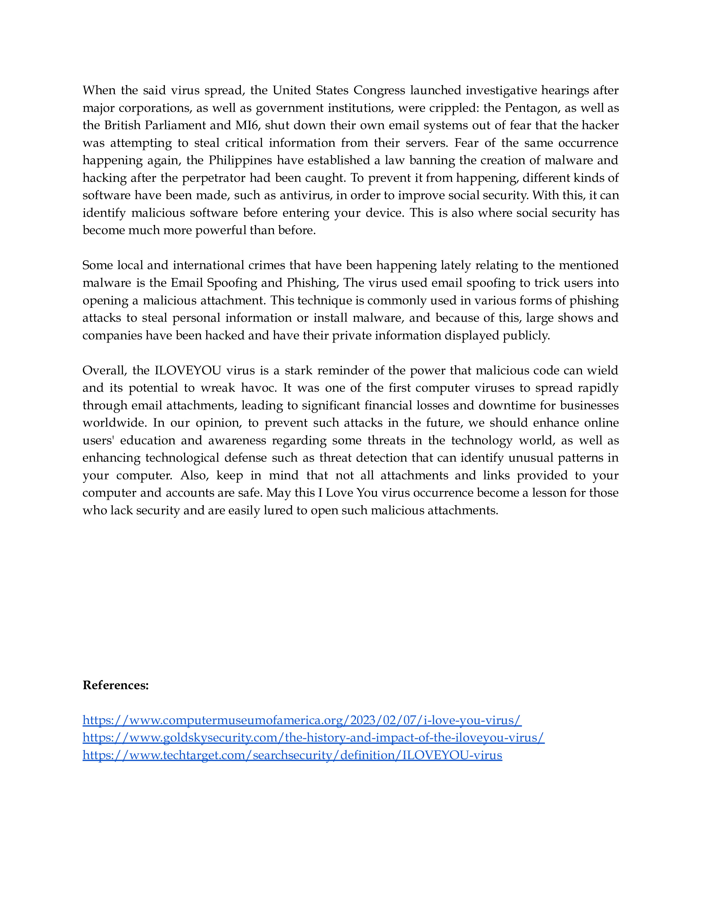

Technology Timeline Infographics
This lesson is very important for me for that I discovered how technology evolves rapidly over time. The timeline shows how inventions like the telephone, computer, and internet were developed over different eras, highlighting how each innovation builds on previous ones.

Cybercrime Case
There are a lot of things that I have learned in this lesson about cybercrime, like when people do bad things online. I realized that there are other people who did not intend to harm other networks and computers, like stealing information or hacking accounts. I also learned that we should be careful and protect our personal information to stay safe.


Wireframe Creation Portfolio
In this lesson I learned that Wireframe is about making a simple outline or sketch of a website or app before building it. It shows how things like buttons, images, and text will be placed on the screen. It’s like drawing a blueprint for a house before construction starts.